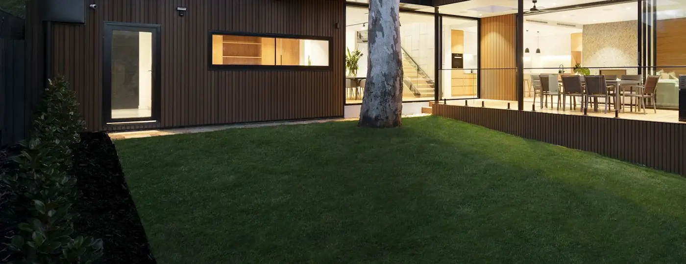

South-west Broward
Outdoor Remodeling Contractor in Pembroke Pines, FL
Most yards here do not need rebuilding. They need three or four things done in the right order.
The question is not what to build. It is what to build first
Pembroke Pines covers a lot of ground and a lot of housing, most of it built as planned subdivisions over the past few decades. The rear yards vary in size, but a great many of them share a starting point: a concrete slab off the back of the house, often screened, a stretch of lawn, and a fence line.
There is nothing wrong with that as a starting point. It is a blank one. And because it is a blank one, the enquiries we get from this part of the county are less often "here is a problem" and more often "we would like to do something with the back, and we are not sure where to begin or what it should cost us to begin there".
This page answers that question rather than listing services. There is a sensible order to improve a yard in, the order is much the same whatever your budget, and getting it wrong is how people end up spending money twice on the same square footage.
The useful part
A sensible order to change a yard in
Roughly least visible to most visible, and roughly most permanent to least. Those two happen to be the same list.
-
Fix what is failing
Water standing after a storm, a slab that has cracked and moved, a fence leaning after the last one. These are not improvements and they are not optional, because everything built on top of an unresolved ground problem inherits it.
-
Settle levels and drainage
Where finished surfaces sit and where water goes. This is invisible, unrewarding and the single most expensive thing to revisit later, because revisiting it means lifting whatever was laid on top.
-
Put in what has to be buried
Conduit for lighting, a gas run for a future grill, a sleeve under a paved area. Cheap while the ground is open and disproportionately expensive afterwards — worth doing even for a phase you are not certain you will build.
-
Build the surface
The paved area you actually stand on. This is where the visible change starts, and it is the element that most determines whether the yard reads as finished.
-
Add shade
Cover over part of that surface. In this climate it is what converts a space you look at into a space you sit in during the afternoon, and it needs footings, which is why its position is decided at stage two even if it is built at stage five.
-
Then the green and the edges
Lawn, turf where grass keeps losing, planting, and the boundary. Cheaper to change your mind about, easier to do later, and genuinely better once there is something for them to frame.
Why the order matters more than the budget
Two households can spend the same amount on the same yard and get very different results. The one that starts with the ground and ends with the planting gets a finished space. The one that starts with the pretty parts spends the second year digging them up to fix the first one.
Starting point
What a standard rear yard gives you to work with
The slab
Usually poured with the house, usually smaller than the way people now use a yard, and often in reasonable condition. Whether it can carry a new surface as an overlay or needs taking out is the biggest single variable in the budget, and it is answered by inspection rather than by its age.
The screened enclosure
Common, useful, and physically tied to the slab it is anchored to. That connection is why the enclosure has to be part of the conversation from the start rather than worked around at the end.
The lawn
Typically the largest area and the least used. Some of it is worth keeping as lawn, some of it is worth paving, and the shaded or heavily trafficked parts are usually where turf makes sense rather than a fourth attempt at sod.
The fence line
Already there, frequently the original, and doing one of two jobs — marking the boundary or screening a specific view. Knowing which one you actually need changes the material and often shortens the run.
The side yard
The access route for everything, and usually the strip where grass has never really established. Worth resolving as part of the work rather than left as the bit nobody looks at.
The equipment corner
Air conditioning, pool equipment, bins. It has to stay reachable and it has to stay ventilated, so screening it is a small job with a large effect — but only if the access it needs is respected.
Available here
Where each service falls in that order
The same eleven services are available across our whole coverage area. What follows is where each one sits in the sequence above.
Groundwork and drainage — stage one
Not a line on a brochure, and the part of paver installation that decides whether everything above it behaves. Excavation, compaction, falls and where the water ends up.
Patios — stage four
The surface people stand on, sized around dining and lounging rather than around the shape the builder left behind. The most visible single improvement available to most of these yards.
Pool surrounds — stage four
Where there is a pool, the surround usually dates before the pool does. Overlay or rebuild is settled by looking at the slab, and the answer changes the scope substantially.
Pergolas and tiki huts — stage five
Built late, positioned early. Footings mean the location has to be fixed while the ground is still open, even when the structure itself is a later phase.
Artificial turf — stage six
For the ground where grass keeps losing: the shaded strip, the dog's route, the narrow side yard. Its own base and drainage still go in properly underneath.
Fencing — stage six
Last in the sequence for a practical reason as well as a budgetary one: the boundary is usually the route material comes through, so closing it early makes the rest of the work harder.
Driveways — its own project
Front-of-house work that rarely shares a programme with the rear yard, though if both are planned the access and the deliveries are worth coordinating.
Outdoor kitchens — decided at stage three
The service most damaged by being an afterthought. Gas, water, drainage and power want to be in the ground before the paving goes down, whatever year the kitchen itself arrives.
Complete transformation, in instalments
Staging a whole-yard plan without paying twice
A complete outdoor remodel does not have to happen in one season. It does have to be decided in one sitting, and the difference between those two things is most of the money at stake.
What has to be settled up front is short: where the zones go, what the finished levels are, where water goes, and where anything with a footing or a buried service will eventually sit. Once those are fixed, the visible elements can arrive in any order your budget allows, over as many years as you like.
What cannot be deferred cheaply is anything under the surface. A gas line for a kitchen you will build in three years costs very little to lay while the ground is already open, and a great deal once there is a finished terrace over the route. The same is true of conduit for lighting and of footings for a structure.
The failure mode is not staging. It is staging without a plan — three separate projects that each work around the last one, and a yard that never quite reads as a single space because it was never designed as one.

Design for the climate
Flat ground, hard rain, strong sun
There is very little natural fall to borrow. On ground this flat, a paved area does not drain because water runs downhill — it drains because someone worked out where the water is going and built the surface to send it there. That is the argument for putting stage two ahead of the parts you can see.
Summer rain arrives faster than it drains. A yard that copes with ordinary weather can still hold water after a heavy storm, and the place it holds it is the place to deal with before paving, not after.
An uncovered surface is a morning space. For much of the year the middle of the afternoon belongs to whatever has shade over it. That is why stage five is not a luxury item — it is the difference between a terrace that gets used and one that gets photographed.
Nothing paved stays cool in direct sun. Lighter tones help at the margins, and shade helps considerably more. Any product sold on the strength of staying cool deserves a look at the manufacturer's own documentation first.
Storm season is part of planning. What is anchored, what is freestanding and what comes inside is worth settling while the yard is being designed rather than at the end of the summer.
How it runs
From "we should do something out back" to a plan
-
Say what is bothering you
Not what you want built — what does not work. Nowhere to sit, water in the same corner every storm, a lawn that has given up, a view from next door. The build follows from that.
-
On-site assessment
The condition of the slab, whether an enclosure is tied to it, where water goes, what the side access allows, and what the boundary is doing.
-
A plan for the whole yard
Zones, levels, drainage and the position of anything with a footing or a buried service — drawn once, whether or not it is all being built now.
-
Split it into stages you can actually fund
What is in this phase, what is deliberately being done now to make a later phase straightforward, and what is genuinely deferrable at no cost.
-
Confirm requirements and write it down
What the municipality requires at your address, anything a community association has to approve, and a written scope for the phase being built.
-
Build, clean down, walk it
Ground first, then surfaces, then the visible finishing, with a walkthrough at the end covering aftercare and what the next stage would involve.
Examples
What the stages look like once they are built


About these photographs
These show the kind of result each stage produces. We are not presenting them as our completed projects, and we are not saying any of them was photographed in Pembroke Pines. When there is verified project photography, it will be labelled as exactly that.
Common questions
Questions from Pembroke Pines homeowners
I can only do part of it this year. What should come first?
Anything that is actively going wrong, then the ground, then the surface. A drainage problem or a failing slab will undermine whatever is built on top of it, so those come first even though nobody enjoys spending money on them. After that, the paved area you stand on does more for how the yard looks and works than any other single change. Shade comes next because it decides how many hours the space is usable, and the softer items — planting, lighting, furniture — genuinely belong last, because they are the cheapest to change your mind about.
Is it more expensive to do the work in stages?
Somewhat, and it is worth knowing where the extra goes. Each visit carries its own setup — access, protection, equipment, deliveries — and that is paid again each time. The larger risk is rework: paving cut open later for a gas line or a footing, or a surface laid to a level that a later element then has to work around. Staging is a perfectly sensible way to manage cost as long as the whole yard is planned once and anything buried goes in during the first stage. Deciding as you go is what turns staging into paying twice.
Can I keep my screened enclosure?
Often, and it depends on what is happening underneath it. Because it is bolted down to the concrete, its fate follows the concrete's: laying a new surface over a sound slab can leave the frame where it stands, whereas breaking the slab out generally cannot. Enclosures are somebody else's licence and somebody else's permit, so if one has to be taken down and put back, that appears in the written scope with a price against it instead of vanishing into a paving figure. Which of the two situations you are in is answered by inspecting the slab.
How big should the patio be?
Big enough for what goes on it, which is a smaller number than most people expect and a different number for each use. A dining setting needs clearance for chairs to pull back behind seated people; a lounge grouping needs a walking route past it. Working from those clearances usually produces a well-proportioned area with lawn left around it, which looks better and costs less than paving to the fence line and furnishing a third of it.
Do you take on smaller jobs?
Yes. A single well-chosen element — a properly sized terrace, a turf panel where the lawn has given up, a replacement fence run — is a legitimate project and frequently the right one. What we would rather not do is take on a small piece of work while knowing it will be dug up by the next phase, so if there is a longer plan it is worth mentioning even when only part of it is being built now.
Do you handle permitting in Pembroke Pines?
Yes, for the work we carry out, and the first step is finding out what your particular address needs rather than assuming it matches a neighbour's. Those requirements come from the municipality and the county, they are not uniform between them, and that is why you will not find one stated here. Where your property sits within a community that has its own approval process, that runs separately from the municipal one and is worth starting early, particularly for anything visible above fence height.
Get the order right before you spend anything
A free on-site visit in Pembroke Pines, a plan for the whole yard, and a straight answer about which stage is worth funding first.